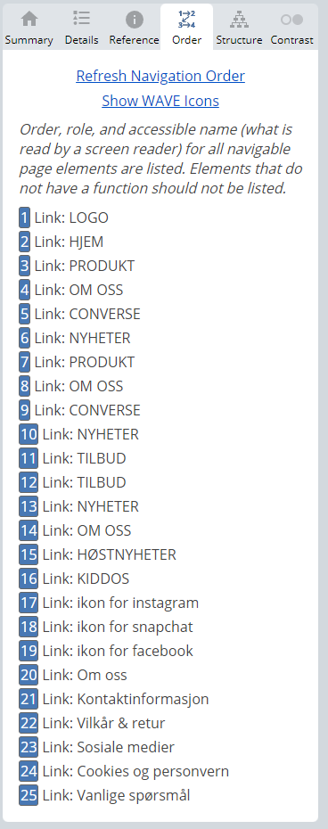

Oblig 4
DEL 2 ANALAYSE
Nøkkelord
Nøkkelord er en frase eller ord som det søkes i en søkemotor. Det her en nettside må velge ut sine nøkkelord, for å kunne bli mer synlig.
Denne nettbutikken selger sko så da er det nødvendig med noe ord som omhandler dette. Det må ha en relevans.
Vil man ha mer trafikk, må man ha mer nøkkelord men for å få flere nøkkelord må man ha mer innhold. Når man har mer innhold, må man promotere innholdet.
Dette er kun en nettbutikk, uten en fysisk butikk derfor utelukkes det topografi og geografiske grunner men ønsker ikke å sende ut av Norge (det vil også utelukke Longerybyen, det er dyrt for bedrifter å sende dit) så vil markedsføre innenlands.
Faktorer som spiller inn utenfor siden er linker (kvalitet, innhold og antall), sosialt (rykter, kundetilfredstillhet og antall delinger på sosiale medier), tillit (historie, identitet, interaksjoner og autoritet) og lokalitet (sted og tilknytting)
mens det som spiller inn på den faktiske
siden er innholdet (kvalitetsmessig, ordbruk, lokalitet mm), HTML (titler, informasjon, struktur, header og at det foreligger et godt innhold)
og arkitektur (ingen duplikat, mobile first, sikkerhet, speed, lenker og program som brukes for søkemotorer som samler data fra nettet som crawlere).
Siden SEO er organisk traff ergo ikke betalt søketreff kreves det en del arbeid, i motsetning om man bruker SEM (search engine marketing) i søkemotorene, som er betalte annonser som vil gi et rasker resultat men som ulemper at koster en god del og effekten etter en kampanje er lav.
Men med hardt arbeid med SEO, vil det kunne føre til flere besøkende, mer og en lenger effekt enn andre muligheter så vil det lønne seg (så lenge dette prioriteres og jobbes aktivt med- siden det ikke har en umiddelbar effekt).
Brukere søker etter hva de ønsker å oppnå med søket, gjerne en vare eller et produkt/kategori og ikke direkte søk opp mot en bedrift.
Algoritmene endrer seg fra dag til dag og er derfor ikke statisk, her spiller nytt innhold og konkurransedyktige konkurrenter inn, med mer.
Innholdet må samsvare med det som søkes ellers kan man oppleve en fluktfrekvens som vil si at kunden klikker seg inn på nettsiden uten å gjennomføre en handling eller videre navigering på siden før de forlater siden.
Bounce rate regnes ut av Google Analytics som tar økter der det bare registreres åpning og lukking av en enkeltside og deretter deler disse på antall totalt økter. Er det høy fluktfrekvens vil det ikke være godt tegn for markedsføringen når det gjelder nettbutikker,
her er målet å få en bestemt handling (varekjøp) til å gjennomføres. Hadde det vært en blogg, ville det ikke spilt en særlig stor rolle (f.eks. en bruker søker etter en konkret matoppskrift og går inn på en matblogg = inn og ut når oppskriften er funnet uten videre navigering på bloggen).
For å redusere fluktfrekvensen bør hver side ha et innhold som svarer til brukerens søkeintensjon, og punkter som kan forbedre fluktfrekvensen er en rask nettside, call-to-action i teksten, mobile first, god struktur,
uten lenker som er døde, god og tydelig navigering for menyen og et estetisk og funksjonell design.
Men det viktigste er at landingssiden sitt innhold er relevant for søkeintensjonen, som vil si intensjonen til formålet eller intensjonen er bestemt når søkefelt (Google) brukes for å søke etter det som ønskes å få ut av en søkemotor.
Søkemotorer er ganske harde, viktig å ikke bryte reglene eller jukse seg frem for da kan man risikere å bli shadowbannet eller bannlyst. Det er f.eks. ikke verdt å jukse seg opp til en topp-plassering i en søkemotor når det ikke finnes noen indikasjoner på at det er reelt for så å bli hevet langt bak.
Noe kan ikke påvirke, som cookies og logghistorikk som søkemotorene har om deg- som igjen vil påvirke resultatene ved søk, da er det bedre å gå i inkognito-modus, privat-modus eller bruke skrive inn &pws=0 i URLen.
Det kan være lurt å bruke nøkkelord som ikke alle andre bruker med lav konkurranse.
Dette er som nevnt en nettbutikk med kun sko, og et merke som selges er Converse- noe som bør brukes når det gjelder keywords.
Nøkkelord liste
- Converse nyheter
- Converse Blue Green
- Converse Kidz, bytter ut S med Z.
- Støvletter, et navn ikke alle bruker- det vanligste er for det meste å bruke bare sko.
- Sjo, bytter ut K med J- ergo stavefeil med nærliggende bokstav. Her vil auto-correkt på mobil (iphone) endre tilbake til sko.
- Skp, bytter ut O med P- ergo stavefeil med nærliggende bokstav. Her vil auto-correkt på mobil (Iphone) endre tilbake til sko.
- Dko, bytter ut S med D- ergo stavefeil med nærliggende bokstav. Her vil auto-correkt på mobil (iphone) endre tilbake til sko.
- Slo, butter ut K med L- ergo stavefeil med nærliggende bokstav. Her vil ikke auto-correkt på mobil (iphone=) endre tilbake til sko.
- Billig sko, mindre brukt i forhold til "sko salg".
- Tilbud sko, mindre brukt enn "sko salg".
- Vonde føtter, så lenge produktene som selges er forsket på eller er nøye vurdert ut ifra fot-problematikk kan dette brukes. Men kan ikke brukes (eller noen mener nok at det kan brukes på f.eks. Happy Floats men det er misvisende).
- Smerter i fot, av samme grunn som overfor.
- Hallux valgus, av samme grunn som overfor. Bruker en konkret diagnose som omhandler smerter.
Det må brukes søkeord som faktisk brukes. Når søkeord skal vurderes, bør det undersøkes hvor høy «Keyword Difficulty» ligger, f.eks. bare «sko» har en KD på 54 i følge keyword-generator på ahrefs.
I motsetning til gaming, så hadde en høy KD vært positivt men i SEO så er ikke det like populært å bruke, siden det handler om vanskelighetsgraden til å oppnå en topp 10 søkeresultater i en 100 poengs skala.
Og i følge Serpdrill, har «sko» en vanskelighetsgrad på 76 med et månedlig volum på 33.1K.
Vi kan legge inn nøkkelord på flere måter- inne i URL, HTML, metatittel, bilder (i ALT-tag) mm.
I følge SeOpp.no under «Søkevolum» vil en 1.plass kunne forventes at 30% av søkevolum vil føre klikk til din side.
SEO ANALYSE
Før det kan gjøres endringer på nettsider som skal forbedre potensiale, kan man anskaffe seg innsikt gjennom en SEO-analyse. Her kan man blant
annet se hvordan nettsiden sin optimalisering er for å kunne oppnå rangeriner i søkemotorer.
TEKNISK ANALYSE
Ser gjerne på den totale tekniske statusen til nettsiden. Fokuseres på identifisering og løse potensielle problemer og mangler som har en innvirkning på synligheten.
Herunder om data er strukturert, mobilvennlighet (mobile first),
HTTPS, sitemap, sidelastningstid og indekseringsproblemer.
SØKEORDANALYSE
Først bør det utføres en søkeordanalyse for å finne ut hvordan målgruppen søker og hvilken informasjon om og svar på, kartlegge forståelsen til målgruppen av et produkt/tjeneste
og hvilke ord som brukes når en bruker søker.
Dette vil gi en bedre forståelse vedr. målgruppen, nettsidens presentasjons på unike søkeord og hvilke type innhold som bør produseres for å dekke søkeintensjonen.
INNHOLDSANALYSE
En av de viktigste faktorene for rangering i en søkemotor er inneholdet på nettsiden. Her jobbes det både med vuerdring av kvaliteten på det allerede eksistrende innholdet på nettsiden og kartlegging av
både mangler og muligheter for ett nytt eller optimalisert innhold som gjerne har utgangspunkt i søkeordanalysen.
Denne analysen tar i tillegg med en vurdering av metadata som inkluderer titler, overskrifter og beskrivelser for å være sikker på at disse er
optimalisert for søkeintensjon og relevans.
ANALYSE AV BACKLINKS
En annen faktor som påvirker synligheten i søkemotor. Lenkenanalysen vil vurdere kvaliteten på lenker og antallet som går fra et annet domene til ditt eget domene.
Er det lav kvalitet på lenker eller spam som
peker inn til ditt eget domene vil det kunne ha en negativ påvirkning- derfor er den prosessen viktig for å avdekke og fjerne disse.
SEO analyse
Dette er en avgjørende del av digital markedsføring i dagens samfunn. Høy grad av viktighet, siden det er viktig å være synlig for besøkende og poteniselle kunder i en verden der det er høy konkurranse om å få kundene.
Denne analysen hjelper til for å forstå og forbedre virksomhetens synlighet og ytelse når det kommer til søkemotorer.
Den går ut på å evaluere og analysere nettsidens organiske synlighet og dens prestasjon i søkemotor som innebærer å undersøke de ulike faktorer som har en påvirkning for synligheten, og identisere områder på siden som
kan endres for å forbedre økningen og tiltrekke mer organisk trafikk. Grundig SEO-analyse innebærer å se på tekniske og innholdsmessige aspekter på et nettsted.
Index.html
Dette er resultatet av den første lighthouse analysen.
SEO analyse
Her mangler det meta description denne vil inkluderes i søkeresultater for å få et konsist oppsummert sideinnhold.
Her er heller ikke trykkmålene i riktige størrelse, for mobil vennlighet- interaktive elementer som knapper og lenker bør være store nok (48x48px) eller ha nok plass rundt dem,
til å være lett nok til å touche uten at det overlapper andre elementer.
Accessibility
Her kommer det frem at bakgrunn og forgrunn farger ikke har tilstrekkelig kontrastforhold. Tekst med lav kontrast er vanskelig eller umulig å lese for mange brukere. Dette gjelder for navigasjonsmenyen i footer
som har en lysegrønn farge.
Best practise
Her registreres det en avlastningslytter (unload listener). Unload-hendelsen utløses ikke pålitelig og å lytte etter den kan forhindre nettleseroptimaliseringer som back-forward cache. Her kan
pagehide eller synlighetsendring-hendelser istedenfor.
Denne kobles til et program som kjøres på min maskin; Kaspersky.
Browser errors were logged to the console. Feil logget på konsollen indikerer uløste problemer som kan komme fra nettverksforespørselsfeil og andre nettleser-bekymringer.
CSP og XSS, viktig at CSP er effektiv mot XSS-angrep. Det å ha en sterk innholdssikkerhetspolicy reduserer risiko for at en cross-site scripting angrep reduseres dramatisk.
Her er ingen CSP funnet i håndhevingsmodus. High severity.
Performance
Bildefilene er store og bruker derfor lenger tid når det gjelder nedlastningstid. Dette er forhold som er viktig, brukere/kunder vil vurdere det negativt om siden er treg og det kan resultere i
å miste kunder til andre konkurrenter som har en raskere nedlastningstid. JPEG og PNG filer tar større plass. Beste er å lagre bilder i next-gen formater som Webp og AVIF for bedre komprimering og
vil gi raskere nedlasdtninger og mindre dataforbruk.
Bilde elementer har ikke eksplisitt width og height (bredde og høyde). Dette kan redusere layoutforskyvninger og forbedre CLS.
Side forhindret tilbake og forover buffergjennoppretting. Mange navigasjioner utføres ved å gå tilbake til forrige side eller forover igjen. TIlbake/frem- cachen (bfcache)
kan fremskynde disse returnnavigasjonene.
Her spiller også program som kjøres på min personlige maskin inn som heter Kaspersky. I forhold til koden på nettsiden er det mindre å gjøre derfra som kan bedre dette, som går som "3rd-party resources"
som har en effekt i disse: enable text compression, url, reduce unused css.
USE HTTP/2
Siden kjøres i protokollen HTML/1. Men protokollen HTTP/2 har flere fordeler, denne er binary istendefor textual. I tilleegg er den fullstendig multiplekset istedenfor å blokkerende og ordnende tilkoblinger som i HTTP/1.
Elimerer også behovet for domenedeling, kan derfor brukes for alle ressurser fra et gitt domene.
Bruker header-komprimering for å redusere overhead, lar servere pushe svar proaktivt inn i klientbuffer (har blitt fjernet fra nettlesre siden det ikke har funket som designet).
HTTP/1 kan jeg ikke endre på, prøvde å undersøke om det var mulig å endre til HTTP/2.
SERVE IMAGES IN NEXT-GEN FORMATS / VIS BILDER I NESTE GENERASJONS FORMATER
Bildeformater som WebP og AVIF gir ofte bedre komprimering enn PNG og JPEG som er brukt i dette tilfelle, dette kan hjelpe med raskere nedlastninger og mindre dataforbruk.
Ressursstørrelse er 559.2KiB. Potensiell sparing vil være 276.6KiB for alle bilder som er brukt.
ELIMINATE RENDER-BLOCKING RESOURCES/ ELIMINER GJENGIVELSEBLOKKERENDE RESSURSER
Ressurser blokkerer den første malingen på siden. Her kan det lønne seg å vurdere levere kritisk JS/CSS inline og utsette alle ikke-kritiske JS/stiler.
Overføringsstørrelse er 2.5KiB og potensielle sparing vil være 690meter i sekundet.
Kan være at Kaspersky programvare på min maskin påvirker denne.
REDUCE UNUSED CSS/REDUER UBRUKTE CSS
Reduser ubrukte regler fra stilark og utsett CSS som ikke brukes for innhold over skillelinjen for å redusere byte som forbrukes av nettverksaktivitet.
Overføringstørrelse er 247.7 KiB og potensiell sparing er på 247.7KiB.
Produkt.html
SEO
Her mangler det meta description denne vil inkluderes i søkeresultater for å få et konsist oppsummert sideinnhold.
Her er heller ikke trykkmålene i riktige størrelse, for mobil vennlighet- interaktive elementer som knapper og lenker bør være store nok (48x48px) eller ha nok plass rundt dem,
til å være lett nok til å touche uten at det overlapper andre elementer.
Accesibility
Her kommer det frem at bakgrunn og forgrunn farger ikke har tilstrekkelig kontrastforhold. Tekst med lav kontrast er vanskelig eller umulig å lese for mange brukere. Dette gjelder for navigasjonsmenyen i footer
som har en lysegrønn farge.
Best practise
Her registreres det en avlastningslytter (unload listener). Unload-hendelsen utløses ikke pålitelig og å lytte etter den kan forhindre nettleseroptimaliseringer som back-forward cache. Her kan
pagehide eller synlighetsendring-hendelser istedenfor.
Denne kobles til et program som kjøres på min maskin; Kaspersky.
Browser errors were logged to the console
Feil logget på konsollen indikerer uløste problemer som kan komme fra nettverksforespørselsfeil og andre nettleser-bekymringer.
CSP og XSS
viktig at CSP er effektiv mot XSS-angrep. Det å ha en sterk innholdssikkerhetspolicy reduserer risiko for at en cross-site scripting angrep reduseres dramatisk.
Her er ingen CSP funnet i håndhevingsmodus. High severity.
Performance
Bildefilene
er store og bruker derfor lenger tid når det gjelder nedlastningstid. Dette er forhold som er viktig, brukere/kunder vil vurdere det negativt om siden er treg og det kan resultere i
å miste kunder til andre konkurrenter som har en raskere nedlastningstid. JPEG og PNG filer tar større plass. Beste er å lagre bilder i next-gen formater som Webp og AVIF for bedre komprimering og
vil gi raskere nedlasdtninger og mindre dataforbruk.
Bilde elementer har ikke eksplisitt width og height (bredde og høyde). Dette kan redusere layoutforskyvninger og forbedre CLS.
Side forhindret tilbake og forover buffergjennoppretting. Mange navigasjioner utføres ved å gå tilbake til forrige side eller forover igjen. TIlbake/frem- cachen (bfcache)
kan fremskynde disse returnnavigasjonene.
Her spiller også program som kjøres på min personlige maskin inn som heter Kaspersky. I forhold til koden på nettsiden er det mindre å gjøre derfra som kan bedre dette, som går som "3rd-party resources"
som har en effekt i disse: enable text compression, url, reduce unused css.
USE HTTP/2
Siden kjøres i protokollen HTML/1. Men protokollen HTTP/2 har flere fordeler, denne er binary istendefor textual. I tilleegg er den fullstendig multiplekset istedenfor å blokkerende og ordnende tilkoblinger som i HTTP/1.
Elimerer også behovet for domenedeling, kan derfor brukes for alle ressurser fra et gitt domene.
Bruker header-komprimering for å redusere overhead, lar servere pushe svar proaktivt inn i klientbuffer (har blitt fjernet fra nettlesre siden det ikke har funket som designet).
HTTP/1 kan jeg ikke endre på, prøvde å undersøke om det var mulig å endre til HTTP/2.
SERVE IMAGES IN NEXT-GEN FORMATS / VIS BILDER I NESTE GENERASJONS FORMATER
Bildeformater som WebP og AVIF gir ofte bedre komprimering enn PNG og JPEG som er brukt i dette tilfelle, dette kan hjelpe med raskere nedlastninger og mindre dataforbruk.
Ressursstørrelse er 559.2KiB. Potensiell sparing vil være 276.6KiB for alle bilder som er brukt.
ELIMINATE RENDER-BLOCKING RESOURCES/ ELIMINER GJENGIVELSEBLOKKERENDE RESSURSER
Ressurser blokkerer den første malingen på siden. Her kan det lønne seg å vurdere levere kritisk JS/CSS inline og utsette alle ikke-kritiske JS/stiler.
Overføringsstørrelse er 2.5KiB og potensielle sparing vil være 690meter i sekundet.
Kan være at Kaspersky programvare på min maskin påvirker denne.
REDUCE UNUSED CSS/REDUER UBRUKTE CSS
Reduser ubrukte regler fra stilark og utsett CSS som ikke brukes for innhold over skillelinjen for å redusere byte som forbrukes av nettverksaktivitet.
Overføringstørrelse er 247.7 KiB og potensiell sparing er på 247.7KiB.
Om-oss.html
SEO
Her kommer det også frem at documentet ikke har en meta beskrivelse. Det er viktig å formatere HTML-en på den måten som gjør det mulig for crawlers å forstå innholdet bedre.
Accesibility
Her kommer det frem at bakgrunn og forgrunn farger ikke har tilstrekkelig kontrastforhold. Tekst med lav kontrast er vanskelig eller umulig å lese for mange brukere. Dette gjelder for navigasjonsmenyen i footer
som har en lysegrønn farge.
Best practise
Her registreres det en avlastningslytter (unload listener). Unload-hendelsen utløses ikke pålitelig og å lytte etter den kan forhindre nettleseroptimaliseringer som back-forward cache. Her kan
pagehide eller synlighetsendring-hendelser istedenfor.
Denne kobles til et program som kjøres på min maskin; Kaspersky.
Browser errors were logged to the console. Feil logget på konsollen indikerer uløste problemer som kan komme fra nettverksforespørselsfeil og andre nettleser-bekymringer.
CSP og XSS, viktig at CSP er effektiv mot XSS-angrep. Det å ha en sterk innholdssikkerhetspolicy reduserer risiko for at en cross-site scripting angrep reduseres dramatisk.
Her er ingen CSP funnet i håndhevingsmodus. High severity.
Performance
Som de respektive sidene overfor foreligger det samme vurderinger fra lighthouse.
Bildefilene er store og bruker derfor lenger tid når det gjelder nedlastningstid. Dette er forhold som er viktig, brukere/kunder vil vurdere det negativt om siden er treg og det kan resultere i
å miste kunder til andre konkurrenter som har en raskere nedlastningstid. JPEG og PNG filer tar større plass. Beste er å lagre bilder i next-gen formater som Webp og AVIF for bedre komprimering og
vil gi raskere nedlasdtninger og mindre dataforbruk.
Bilde elementer har ikke eksplisitt width og height (bredde og høyde). Dette kan redusere layoutforskyvninger og forbedre CLS.
Side forhindret tilbake og forover buffergjennoppretting. Mange navigasjioner utføres ved å gå tilbake til forrige side eller forover igjen. TIlbake/frem- cachen (bfcache)
kan fremskynde disse returnnavigasjonene.
Her spiller også program som kjøres på min personlige maskin inn som heter Kaspersky. I forhold til koden på nettsiden er det mindre å gjøre derfra som kan bedre dette, som går som "3rd-party resources"
som har en effekt i disse: enable text compression, url, reduce unused css.
USE HTTP/2
Siden kjøres i protokollen HTML/1. Men protokollen HTTP/2 har flere fordeler, denne er binary istendefor textual. I tilleegg er den fullstendig multiplekset istedenfor å blokkerende og ordnende tilkoblinger som i HTTP/1.
Elimerer også behovet for domenedeling, kan derfor brukes for alle ressurser fra et gitt domene.
Bruker header-komprimering for å redusere overhead, lar servere pushe svar proaktivt inn i klientbuffer (har blitt fjernet fra nettlesre siden det ikke har funket som designet).
HTTP/1 kan jeg ikke endre på, prøvde å undersøke om det var mulig å endre til HTTP/2.
SERVE IMAGES IN NEXT-GEN FORMATS / VIS BILDER I NESTE GENERASJONS FORMATER
Bildeformater som WebP og AVIF gir ofte bedre komprimering enn PNG og JPEG som er brukt i dette tilfelle, dette kan hjelpe med raskere nedlastninger og mindre dataforbruk.
Ressursstørrelse er 559.2KiB. Potensiell sparing vil være 276.6KiB for alle bilder som er brukt.
ELIMINATE RENDER-BLOCKING RESOURCES/ ELIMINER GJENGIVELSEBLOKKERENDE RESSURSER
Ressurser blokkerer den første malingen på siden. Her kan det lønne seg å vurdere levere kritisk JS/CSS inline og utsette alle ikke-kritiske JS/stiler.
Overføringsstørrelse er 2.5KiB og potensielle sparing vil være 690meter i sekundet.
Kan være at Kaspersky programvare på min maskin påvirker denne.
REDUCE UNUSED CSS/REDUER UBRUKTE CSS
Reduser ubrukte regler fra stilark og utsett CSS som ikke brukes for innhold over skillelinjen for å redusere byte som forbrukes av nettverksaktivitet.
Overføringstørrelse er 247.7 KiB og potensiell sparing er på 247.7KiB.
Her er det som kan forbedres på performance i om-oss filen.
PDF fil av lighthouse, av index/hjem fil
Åpne pdf fil her her.
DIAGNOSE OG FORKLARINGER
iMAGE ELEMENT DO NOT HAVE EXPLICIT/BILDEELEMENTER HAR IKKE ESKPLISITT BREDDE OG HØYDE
Bør angi en eksplisitt bredde og høyde på bildeelementer for å reduser layoutforskyvninger og forbedre CLS. Gjelder alle bilder og ikoner på siden. Hvert bilde og ikon bør derfor
inneholde width og height.
PAGE PREVENTED BACK/FORWARD CACHE RESTORATION/SIDE FORHINDRET TILBAKE/FOROVER BUFFERGJENNOPPRETTING
Handler om at mange navigasjoner utføres ved å gå tilbake til forrige side eller forover/neste igjen. Tilbake/forover cachen (bfcache) kan øke hastigheten på returnavigasjonene.
SERVE STATIC ASSETS WITH AN EFFICIENT CACHE POLICY
En lang cache-levetid kan fremskynde gjentatte besøk på siden.
Accesibility eller tilgjenilighet-sjekker
,
fremhever muligheter til å forbedre tilgjengeligheten til en webapp. Scorer 92 på accessibility, selv om dette ikke er konkrete nivåer der det er mer som spiller inn- automatisk gjenkjenning kan bare
oppdage et undersett av problemer og har ingen garanti for tilgjengeligheten til webappen (det oppfodres til manuell testing).
CONTRAST
Bakgrunnsfarge og forgrunnsfarger har ikke tilstrekkelig kontrastforhold. Dette gjelder i footer, lenkene som ligger der. Tekst med lav kontrast kan være vanskelig eller helt umulig å lese for mange brukere.
Kan gå vekk fra grønn til en mer solid farge (f.eks. sort) for å forbedre dette. Jeg valgte hovedskakelig den fonten og fargen for å vise til at det er header seksjonen, det som vil være normalt å finne nederst på nettbutikker
og det er ikke det som henviser til produkter. Men endringer her vil kunne gi muligheter til forbedring av lesbarhet til innholdet.
REGISTERS AN UNLOAD LISTENER / REGISTRER EN AVLASTNINGSLYTTER
Unload-hendelse utløses ikke pålitelig og å lytte eterden kan forhindre nettleseroptimaliseringer som back-forward cache, her kan det brukes pagehide eller synlighetsendringhendelse istedenfor.
BROWSER ERRORS WERE LOGGED TO THE CONSOLE / NETTLESEFEIL BLE LOGGET PÅ KONSOLLEN
Dette kan komme fra nettverksforespørspels feil og andre nettleserproblemer, når det er feil logget på konsollen som indikerer at det er uløste problemer.
Her dukker det feil som at det ikke kunne lastes inn til ressursersen; serveren svarte med statusen 404 som indikerer "ikke funnet" på snapchat-ikon, facebook-ikon og instagram ikon.
TRUST AND SAFETY/ SIKKERHET
Nå er ikke denne nettbutikken oppe å går, men hadde den vært aktiv så ville det kunne blitt utført ett cross-site scripting angrep som går ut på å manipulere nettsider. Her er det da tydeligvis XXS hull (eller sårbarhet)
på grunn av at det ikke finnes noen CSP.
ChatGPT
Først sendte jeg koden, så fikk jeg spørsmål om hva jeg ønsket at den skulle gjøre for meg og da var svaret fra meg "Consider the code from an SEO and UU perspective and then specific soloutions".
All kode er kopiert inn, både index.html, om-oss.html, produkt.html og style.css. Svaret fra ChatGPT:
General Recommendations:
Specific Recommendations
Tabell som viser forskjellene
Denne tabellen viser forskjellene fra resultater fra Lighthouse, Wave og ChatGPT.
UU ANALYSER
UU er en universiell utforming som handler om tilrettelegging av samfunnet, uavhengig om du har utfordringer eller ikke- også på det tekniske eller digitale spekteret.
Verktøyene går ut ulike måter for å sjekke om alle UU-krav er tilstede, finnes både som programmer og tilleggspakker for nettleser.
I dette tilfelle brukes plug-in til Chrome; Wave.
Index.html


Detaljer
Alerts: Redudant link:
Her er det en tilstøtende/nærliggende lenke, som går til samme url som i dette tilfelle er både i index.html(Hjem) og om-oss.html (Om Oss) - vil si at den har en annen hyperlink ved siden av seg som leder til samme adresse.
Her er en løsning å kombinere den tilstøtende lenken til den andre og deretter fjerne tekst eller alternativ tekst som den tilstøtende/redudant link har.
Både Hjem og Produkt har redudant linker.
Features:
Bilder:
På siden er det 5 bilder med alternativ tekst. For.eks. alt=»tekst» i html filen. Det er en viktig funksjon for bilde, når det gjelder tilgjengelighet.
Er bildene ikke tilgjengelig (situasjoner der bilder ikke vises på enkelte skjermer eller rett og slett ikke tilgjengelig), så foreligger det tekst om det bilde som ikke vises og det vil alle ha tilgang på,
enten om bildene vises eller ikke. Derfor bør konteksten være noe konkret.
Nå har jeg kun referert til fotograf, men her kunne jeg skrevet mer konkret som f.eks. «brun lav sko».
Linker:
Alternativ tekst er tilstede for et bilde som er innenfor en lenke, som er gjort på nettsiden.
Dette er viktig å inkludere alternativ passende tekst, for det sikrer at funksjonen og formålet med lenken og dets innhold er tilgjengelig for brukere av skjermlesere
eller når bilder er utilgjengelige.
Strucural elements:
H 1:
Handler om at H1 elementet er tilstede.
Dette er viktig siden overskrifter letter sidenavigasjonen for brukere av hjelpemidler, i tillegg som også gir semantisk og visuell mening og struktur til dokumentet.
Første overskrift (H1) bør inneholde det viktigste på siden.
Unordered list:
En punktliste er tilstede. Dette er viktig for uordnende lister presenterer en gruppe relaterte, parallelle elementer.
Brukere av hjelpeteknologier kan navigere etter og innenfor lister. Her bør den uordnet listen være passende for konteksten.
Hvis listeelementer er sekvensielle eller nummererte, vil en ordnet liste ol muligens være mer passende.
Header:
>Et header-element er tilstede. Det er viktig å kunne identifisere sideintroduksjon eller navigering.
Det inngår vanligvis i nettsidens logo, topp-navigasjonen eller annet. Overskrifter forenkler sidesemantikk og navigering.
NAV:
Nav-elementet er tilstede. Det er en viktig del siden navigasjonen identifiserer en del av navigasjonslenker og kan forenmkle sidesemantikk og navigering.
Viktig at elementet definerer sidenavigering. Er det flere navigasjonselementer på samme side kan det differensieres med ARIA-etiketter.
Main content:
Main-elementet er tilstede. Main elementet eller main-attributtet indentifiserer hovedinnholdet på siden. Det forenkler sidesemantikk og navigering.
Viktig at elementet omgir og definerer sidens hovedinnhold.
Footer:
Footer elementet er tilstede. Det er viktig å identifiserer en bunntekst for siden.
Her identifiseres gjerne relaterte linker, opphavsrett, forfatterskap og annet bunntekstinnhold. Det å bruke bunntekst forenkler sidesemantikk og navigering.
Viktig at elementet omgir og definerer bunntekstinnhold på siden.
Aside:
Elementet Aside er tilstede. En side identifiserer sekundært, relatert eller komplementært innhold som vanligvis ligger i et sidefelt.
Kontraster
Ingen kontrast feil er oppdaget, men manuell testing er som regel nødvendig for å teste/undersøke andre potensielle kontrast feil.
Produkt.html
Detaljer
For å ikke skrive det samme som allerede er skrevet for Hjem-siden vil jeg kun identifisere og ikke forklare hva det handler om/eller betyr.
Alerts: Image: To bilder har samme alternativ tekst. Dette er for at jeg henviste til fotograf på alternativ tekst, der to av bildene er fra samme person (TienSeven).
Kunne eventuelt tatt med et siffer bak, evt. skrevet mer detaljer om det enkelte produkt som ville vært best for å identifsere en mer nøyaktig tekst i tilfelle bilde vil være utilgjengelig.
Alerts: redudant link: Her har index.html/Hjem en tilstøtende/redundant link. Logo har samme link med alternativ tekst.
Features:
Alternative text: Fire av bildene har alternativ tekst. Det er fem bilder, men to av de har samme alternativ tekst- ergo fire.
Linked image w/alternative text: Det foreligger alternativ tekst på alle tre ikoner til sosiale medier.
Strucural elements:
Heading level 1: Det foreligger H1- element.
Heading level 2: Det foreligger H2- elementer. Overskrifter letter sidenavigering for brukere av hjelpemidler men gir også semantisk og visuell mening og struktur til dokumentet.
Den akutelle teksten bør være overskrift og strukturert riktig i sidekonturen. Fem stk, for hvert produkt.
3 x Unordered list: Tre uordnende lister er tilstede. Presenterer en gruppe relaterte, paraelle elementer. Her ligger de i Aside, header (navigasjonslinker) og footer.
1 x Header: Header-elementet er tilstede.
1 x Navigation: Navigasjons-elementet er tilstede.
1 x Main Content: Main-elementet er tilstede.
1 x Footer: Footer-elementet er tilstede.
1 x Aside: Aside-elementet er tilstede.
Kontraster
Ingen kontrast feil er oppdaget, men manuell testing er som regel nødvendig for å teste/undersøke andre potensielle kontrast feil.
Om oss.html
Detaljer
For å ikke skrive det samme som allerede er skrevet for Hjem-siden vil jeg kun identifisere og ikke forklare hva det handler om/eller betyr.
Alerts: Redudant link: Det er redudant link, som har en tilstøtende lenke for index.html (hjem)- som vil være på alle sider siden dette er header. Kan endre alternativ tekst i logo elementet.
Features:
3 X alternative text: Det er tre unike alternativ tekst på alle tre bildene.
3 X linked image with alternative text: Det er er tre unike alternativ tekst på lenkene.
1 X Language: Tilstede.
Structural Elements:
1 x heading level 1: Det foreligger en hovedoverskrift (Om oss).
3 x Heading level 2: Det foreligger tre overskrifter innenfor hver del (Historie, Daglig leder og Ledige stillinger).
3 x Unordered List: Det foreligger tre uordnende lister (aside, navigasjonslinker og footer).
1 X Header: Det foreligger en header.
1 X Navigation: Det foreligger en navigasjonsmeny.
1 X Main Content: Det foreligger et main el.
1 X Footer: Det foreligger et footer el.
1 X Aside: Det foreligger et aside-element
Kontraster
Ingen kontrast feil er oppdaget, men manuell testing er som regel nødvendig for å teste/undersøke andre potensielle kontrast feil.
ENDRINGER I INDEX.HTML
ENDRINGER SOM ER GJORT
Nåværende poeng:
PERFORMANCE
Her er det bildene som spiller inn. Som i produkt-filen har jeg endret bildene til webp fra jpeg eller png for å spare plass. Den sier for å få raskere nedlastningstiden så bør bildene gjøres noe med.
Nå er nedlastningstid en viktig faktor når det gjelder SEO men tørr ikke å endre for mye av disse bilde-størrelsene fra oblig 3.
Andre faktorer som spiller negativt inn på poengsummen er mine applikasjoner på maskinen min, som Kaspersky (som text compression, reduce unused css, render-blocking resources, reduce unused JS, minifyy JS). I tillegg til HTTP/1.
Ikonene har ikke en bredde og høyde egenskap.
Jeg fjernet ubrukt css, etter å ha undersøkt siden via Coverage tab. Den viser også kommentarer inne på css filen som de mener er ubrukt- men disse kan ikke fjernes.
Har lagt inn mer definert meta tag med width og initial-scale.
ACCESSIBILITY
Har fått Accessibility til å gå opp til 100. Her har alle bilde elementer fått alt-attributter. Meta name. Kontrast ratio i bakgrunn og forgrunn endret.
Alle id attributter er unike. HTML-element har img-attributter.
BEST PRACTICES
Her går det negativt pga. programvaren Kaspersky. Den registrer en unload listener og har ikke sikret CSP for å reduserere muligheten for XXS-angrep.
SEO
Her har jeg endret meta-taggen, til en mer detaljert metadata med description. Linkene har en forklarende tekst.
Siden blokkeres ikke fra indexing som er en fordel når det gjelder søkemotorer.
Alle bildene har en mer forklarende alternativ tekst. Linkene har beskrivende tekst.
Minus endringer jeg måtte gjøre med alternativ tekster etter å ha ført inn Aria-attributter etter den første endringen som jeg måtte fjerne.
PDF fil av lighthouse, av index/hjem fil
Åpne pdf fil her her.
ENDRINGER I PRODUKT.HTML
Nåværende poeng:
Endringer er gjort på samme måte som filene over.
PERFORMANCE
Jeg har endret bildefilene fra jpeg eller png til webp, som er en bildefil som de fleste nettbutikker bruker som tar minst plass. Endret på detaljer rundt bilder, som width, height og max-height. De fleste i auto eller 100.
For å kunne gjøre Performance bedre, så bør mer detaljer utføres der. Men redd for å endre for mye, av den gamle oppgaven. Ellers ville den opp på en 100.
Ellers er det program som kjøres på mine maskiner fra KasperSk som trekker ned. Dette har ingen direkte koblingh med oppbyggingen av nettsiden, så det kan ikke jeg gjøre endringer på igjennom kodene (kunnel lagt til JS men det gjøres ikke).
Har undersøkt om det er mulig å endre fra HTTP/1 til HTTP/2 men det er ikke noe som kan gjøres. Kan endre på noe på cache om det er ønskelig.
Avslutningsvis ligger PERFORMANCE nå på 70.
ACCESSIBILITY
Denne gir muligheten for forbedring av accessibility for web applikasjonen.
Den lå på 92 og er nå 100. Her har jeg endret bakgrunnen for å få en fullstendig bak og forgrunn. Har lagt inn mer detaljer på alternativ tekst. Både på de som allerede var her, og lagt til på de som ikke hadde tekst.
Har endret på aria. Footer tekst er mer tydelig.
BEST PRACTISE
Det som gjør at jeg ikke får den høyere er igjen pga. programmer som kjøres på min maskin fra Kaspersky vedr. unload listener. Har heller ikke lagt til en sterk content security policy.
Kun disse to som gir meg en 95 prosent. Men nå er ikke denne oppgaven om sikkerhet.
SEO
Her har jeg endret på meta-dataen (på alle sidene) for å være mer spesifikk, som optimiserer for mer mobil-vennlige størrelser og hjelper mot delay i user input.
Linkene er mer detaljerte om informasjon. Linkene er nå crawlable. Har nå alt attributter på alle sider. Tekstern er endret, til en større font for at det er mulig for alle uavhegig bakgrunn å lese.
Har ingen plug-in. 100% appropriately sized tap targets- som er gjort på interaktive knapper som ikke overlapper hverandre.
PDF fil av lighthouse, i produkt fil
Åpne pdf fil her her.
Endringer på Wave, produkt fil som er utgått
ENDRINGER I OM-OSS FIL
Nåværende poengsum:
PERFORMANCE
Her har jeg også endret bildefiler fra jpeg og png til webp-filer for å gjøre bildene mindre i størrelser (next-gen formater). Har redusert noe css som er ubrukt.
ACCESSIBILITY
Det er gjort samme tiltak som i index og produkt filen.
BEST PRACTISE
Samme som i index.html og produkt.html.
SEO
Samme endringer som i index.html og produkt.html.
PDF fil av lighthouse, om oss fil
Open pdf fil her her.
Endringer i Wave med aria. Fortsatt redudant link pga index.fil.
Produktet Converse fil
I og med at jeg laget en produktside på nytt, for var usikker på om det var rett å gjøre som jeg gjorde på andre måten og i tillegg kunne legge
inn spesifikke metadata og mikrodata på et spesifikt produkt så måtte jeg ta en lighthouse analyase på denne siden også. Den bygde jeg opp av
endringer som er gjort.
Under legger jeg ved lighthouse analysen for første (og siste analyse), siden det meste er laget etter endringene så blir alt lagt inn i seksjonen "endring".
Har ikke gjort andre endringer enn som de første filene.
Produktfilen finnes fortsatt, i navigasjonsmenyen er det Converse.
Ettersom jeg la til søkefelt på alle sider, tok jeg en analyse der den viste at jeg hadde for lite rom mellom elementene. Dette er endret.
PDF fil av lighthouse, i produkkt-converse fil
Åpne pdf fil her her.
Etter endringer i Wave:
Utfallet etter endringer, etter siste analyse på Wave for converse-produkt filen.
Wave av denne siden, analyse
Del 3: Tilgjengelighet
Skjermleserkompatibilitet
Kjører i Windows som OS, bruker derfor CTRL + WIN + ENTER kanppene for å få opp skjermleser applikasjonen. Nå står det ikke
hvilket annet program som kan kjøres på oppgave-teksten, så må bare ta utgangspunkt i at det er dette som gjelder.
Tastaturnavigasjon
Det går an å navigere seg frem på nettsdien ved kun bruk av TAB- tasten. For hver tab-trykk, vil den bytte til neste knapp. På for.eks. produkt-converse filen
kan du trykke på tab for å f.eks. velge størrelse av produktet og deretter legge i handlekurv.
Alle linker er klikkbare via tab-knappen og kan navigeres hvis ønskelig.
Har lagt inn en skip-kode, som er på alle sidene så trykkes TAB tast på vil den dukke opp og kan trykkes enter på for å komme til
hovedsiden.
Testet koden om den gjaldt uten å måtte reloade siden, da ville den kun komme opp en gang per sidenedlastning. La derfor til
en kodebit til så den er tilgjengelig hele tiden.
Kode i css for skip til hovedsiden.
Aria attributter
Nå tolker jeg at det ikke skal endres av det som allerede går som semantisk. Men jeg legger til ARIA som ikke gir meg feilemeldinger.
Har endret på alle img - elementer.
Fjernet den alternative teksten som var før jeg la inn div role="img" aria-label="beskrielse" så det ikke ender
med en redudant link.
Her hadde gjort en feil, så alle bildene måtte til analyse-siden måtte legges inn på nytt fordi mappenavnet ikke kune ha mellomrom i aria.
Endret først til header elementet i aria, men det fikk jeg feilmelding på.
Men de fleste filene skal nå ha aria i navigasjonen, sidebar.
Det vil gi flere div-tagger, i alle fall de elementene som allerede er tilstede. Anser som at nettsiden er relativ semtantisk.
Alle bildefiler på analyse-fil og converse-produkt er omgjort til Aria.
Der det ligger flere enn ett bilde, skulle det ikke trengt et alt attributt
etter det jeg har lest men det ble ikke godkjent av validator. La derfor tilbake.
Undersøkte på Wave om Aria ble godkjent, noe jeg fikk bekreftet. På analyse filen finnes det 105 aria-attributter.
EDIT: har endret tilbake noen aria-attributter, som i header pg main til det som var fra før.
Del 4: Mikrodata og rike resultater
Nå gjør jeg det på den måten som jeg føler er beste og vet at mange anbefaler (JSON) men jeg har lagt ved koden jeg la inn før jeg heller valgte JSON
nederst på siden (converse-produkt).
Selvom det ikke står noe spesifikt om det, så ligger det kode i kommentarfelt som jeg vurderte å ta med før jeg valgte JSON.
Meta tags
Det er lagt inn meta-tags på alle sidene som er tilpasset hvert enkelt sides egenskaper.
Meta tagger tilhørende converse-produkt filen, denne er produkt filen som oppgaven i oblig 3/4 nå hører til.
Meta tagger tilhørende index filen, dvs. hovedsiden eller landingssiden.
Meta tagger tilhørende på om oss filen.
Meta tagger på den utgåtte produkt-siden.
Kommentar
Som en som har lese og skrivefeil, kan det sikkert bli fort rotete med alle br tagger for andre å se
koden men det er en eneste mulighet for meg å klare å sortere hver katagori og emne fra hverandre.
Det jeg bruker tjue timer på for å klare å sette inn riktige elementer i en kode tar sikkert typ to timer for andre.
Det kan likevel være enkelte elementer som jeg ikke har klart å oppdaget selvom jeg har gått gjennom koden og teksten
flere ganger.
Nå skal jeg ha gjort det som står i oppgave-tekstene. Selvom jeg har oppfylt brukervennligheten med font-størrelse osv
og som selv har lese og skrivevansker- blir det altfor vanskelig for meg å skulle lese alt som er skrevet i vanlig dekstop.
Der må jeg heller bruke responsivt og sette den i mobilversjon.
Nå er det heller ikke ønskelig at det skal være for mye farger men har likevel lagt bakgrunnsfarge under hver seksjon på
analyse siden for å sortert noe.
CSS på analyse filen er ikke som ønsket heller men nå er det heldigvis de andre filene som er viktigst.